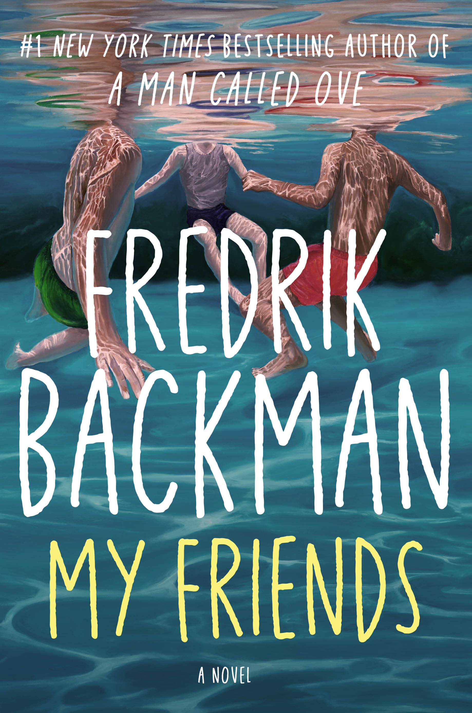

In a very simplified way, this book is about a young aspiring artist that becomes obssesed with an old painting and sets out to uncover the story of the group of friends who inspired it. It is about the people who leave fingerprints on your life long before you understand what they gave to you.